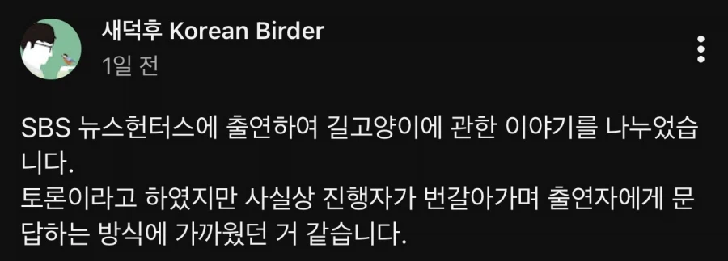
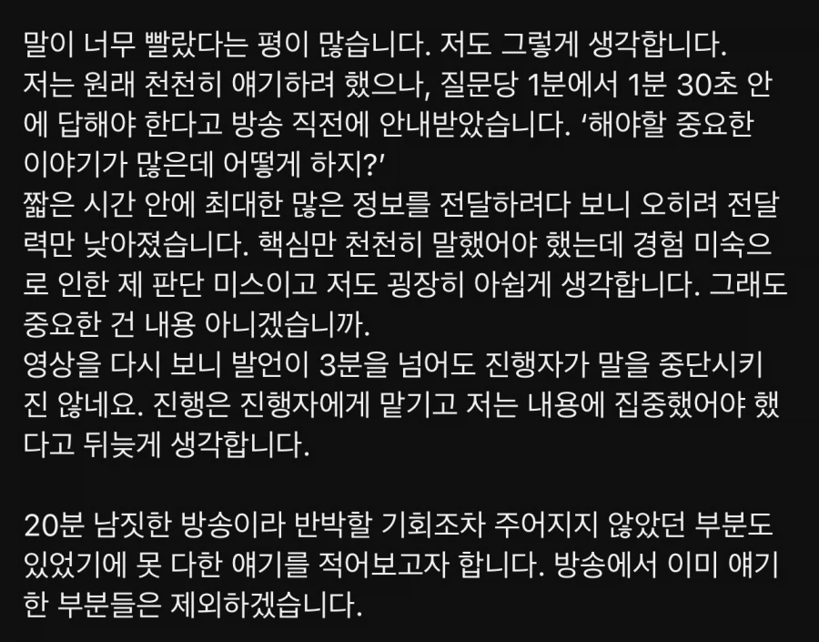
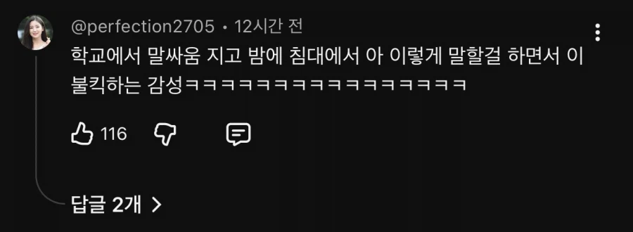

시간 짧은거 이용해서 왜곡시킨 자료 늘어놓고 새덕후 이미지에 타격입히려고 나온거 아닌가 싶음
그러기보다는 자기도 준비 좀 해왔는데 새덕후가 토론 못해서 자멸한거라고 생각할듯
수의사측은 들었을지 모르겠지만 1분 30초밖에 시간을 안줬다고 방송직전에 들었다고 했으니까
반박시간도 따로 없었고 후순서가 더 유리했지 뭐
이미 늦었다 그냥 이제 억빠해서 전국민 캣맘화돼서 불편한새끼가 지는 치킨레이스 해야함 ㅇㅇ 나도 고양이 밥주러간다
논리가 틀린것도 아닌데 말좀 못한다고 사실이 바뀌나 ㅋㅋ
공중파에서 일반인이 대담한것만 해도 대단한거 아닌가
냥박이들 또 신나서 날뛰겠네
힘내라 새덕ㅎ
나도 길고양이 밥주는건 반대하는 입장인데, 살처분은 명확한 근거도 없는 급발진이란 것만 드러난 토론이었음ㅋㅋㅋ 여기도 뭐 댓글로는 여포인 애들도 막상 공론장 나가면 개처발릴거라고 생각하니까 걍 웃기기만 함ㅋㅋㅋ
캣맘 등판 바로 여깃노 ㅋㅋ
살처분 반대하면 분양비내고 무한분양받아라
난 법안 만들어져서 시행한다고 하면 반대 안 함ㅋㅋㅋ 근데 또 똑같이 어버버할텐데 누가 동조해주겠냐ㅋ
살처분ㅠ해야지
장학퀴즈 골든벨 이런거라도 나가본 사람은 알겠지만 걍 카메라가 앞에 잇기만 해도 뇌 절반은 긴장 처리하느라 없다고 생각해야함 시트콤 유튜버도 아니고 저럴수잇지
수의사측이 고양이 사료 주는것과 개체수 증가가 인과관계가 없다고 말하는 것부터 신뢰성이 떨어짐
수의사측이 진짜 이렇게말함??ㅋㅋㅋ
ㅅㅂ 아니
집에 음식물쓰레기 제때 안버리면
벌레 꼬이는것도
무슨 논문발표라도 해야 인정받는 사실임????
먹이가 계속 공급되는데
중성화 안되어있으면
당연히 폭풍번식 개체수 증가지
이 뭔 ㅋㅋ말 같잖은 진짜
아직 뭐 아무것도 안봤지만 걍 캣맘들 ㅈ같아서 새덕후편 들란다
애초에 수의사측이 제시한 논문 자체가 잘못된건데
그걸 반박근거랍시고 제시하고 수치 잘못됐다 지적하니
너 음모론충이니? 수치를 왜 부정하니? 이런 프레임 씌우는데 뭘
새덕후 응원한다.
그래도 캣맘인식은 안바뀜 ㅋㅋ 새덕후 파이팅
ㅋㅋㅋ 장애 도태남들이 여기서 응원하면 뭐가 됨?
닉값 ㄷㄷ
근데 사실 선택적 동물보호라는 거임
그게 이 위선자들의 한계지
다른 것보다 커뮤남들 긁힌 게 개웃김 ㅋㅋㅋㅋㅋㅋ
어차피 새덕후때문에 캣맘 싫어진게 아니라 캣맘 꼴보기도 싫은 중에 새덕후가 나서주니 응원하는거지뭐
난 솔직히 개체수 조절은 필요하다고 봄
새덕후는 틀리지 않았다고 생각함
개붕이들이 옹호하는 거랑 다르게
토론 내용이 너무 처참해서 할 말이 없더라
걍 자기만 아는 이야기 하다가 자폭하고 끝난 토론인데
새덕후가 말 좀 못할 수 있지 정도가 아니었어
말이 더뎌도 본인이 말하고자 하는 주장과 근거가 명확하다면 지원 사격이 가능한데
결론만 말해서 듣는 사람들이 이게 뭔소린가 싶은 정도였음
중간에 사회자가 뭘 말하고 싶은 건지 되물어가면서 조금 도와주기도 하더만
자기가 한 말에는 책임이 있는법
정치적으로 풀어야되는데 한쪽은 이권에 관련되거나 정병들이라 논리도 안통하고 한쪽은 일개 유튜버 한명이니 싸움이 안됨 그러니 정치권도 한쪽편만 들겠지
권위있는 생태학자들은 다 알면서도 지들 잃을거 많으니 동조도 안해주고 걍 캣맘민국으로 살아야됨
애초에 새덕후 옹호하는 커뮤는 새를 너무 좋아해서라기 보다..
고양이 한 종만 편애하는 정신나간 캣맘들에 대한 반발심리로 다가간거라 그 화력과 논리가 약할 수 밖에 없지.
고양이로 인해 피해를 본 경험을 간접적으로 받아들여서 그게 중첩되고 살처분이라는 주장에 찬성하는 건데
10명이 경험한 피해를 간접적으로 받아들여서 '내가 겪은 경험'으로 인식하고 있으니 극단적인 생각이 지배하게 되고 당연히 살처분에 적극 동의하겠지
새덕후가 주장하는 것도 소청도에서 겪은 개인적인 경험이라 이걸 한반도 생태계 전반에 적용시키기엔 무리가 있고, 학술적 통계적 근거가 약함.
TNR? 당연히 개체수 조절 기능을 하고 있음. 이걸 부정해선 안되지.
살처분은 진짜 이대로 가다간 완전 다 씹창난다는 근거가 있거나, 대처능력이 없는 후진국에서나 하는거지.
한국은 아직 그정도로 심각하지는 않고, 후진국도 아님.
잘하고 있는 거 맞음.
밥주는건 개체수 증가와 관련 없다?
개소리임. 20년 전만해도 어미 고양이가 새끼 1마리만 살려도 잘한거라는게 보편적인 인식이었음.
지금은 사료 보급으로 기본 3~4마리가 태어나고, 그에 따라 크고 작은 피해를 보는 사람도 늘어났음.
고양이를 키우는 사람들도 늘어났고 고양이 용품, 사료 소비가 폭발적으로 늘어났는데 개체수 증가와 관련이 없다는 건 말이 안됨.
밥주기 금지 법안은 있어야함.
그래야만 진짜 고양이가 안타까워서 밥주고 싶은 사람만 조용히 구석에 가서 주거나, 준 뒤에 흔적을 스스로 치우거나, 자신의 집에 공간을 마련해서 주거나 하겠지.
그러면 그 영역에 들어가지 못한 대부분의 고양이들의 번식률이 낮아지고 개체수도 조절이 되겠지.
지금처럼 대놓고 급식소 같은걸 여기저기 만들어서 뿌리니까 번식률도 너무 올라갔고, 캣맘같은 미친것들이 너무 늘어나서 그 반대급부로 고양이 혐오인식만 팽배해지고 있으니
다필요없고 난 캣맘 꼴보기싫어서 살처분찬성함
애초에 이게 토론이라고 말할 진행방식도 아니고 단순 의견제시의 장소라고 보는게 맞지 않나 싶음
수의사측은 틀린 자료를 당당하게 제시(언급했다고 보는게 맞음)하고 정부가 조사한 자료가 이상한점이 보여서 지적했는데 그걸 안믿으면 진행이 안된다는 말을 하면 어쩌라는지 모르겠음
걍 새덕후는 토론을 못한 것 뿐임